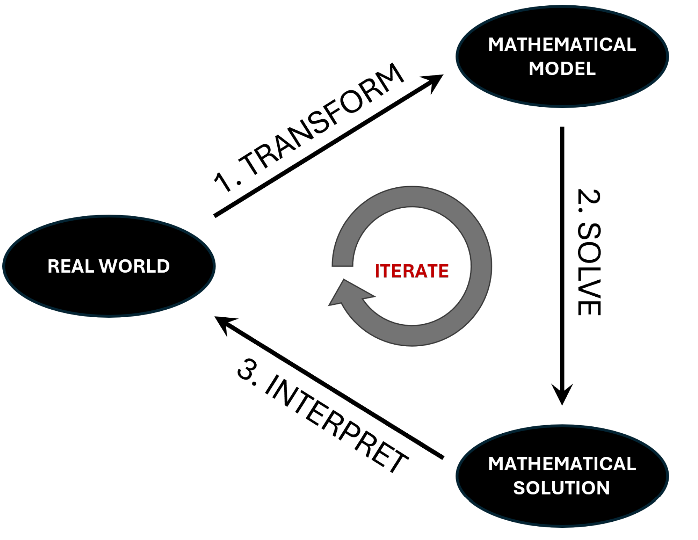
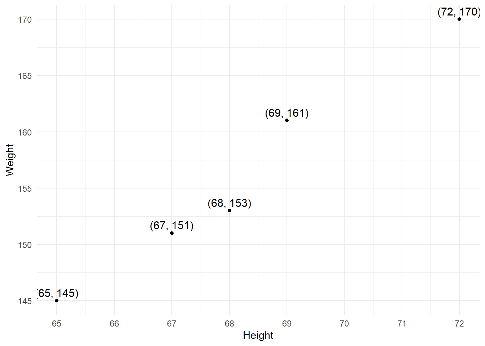

So after your first 4 cups, you’ve spent $22 in all.
Key Terms
📐 What is the general form of a linear function?
A linear function can be written as:
\[
\hat{y} = mx + b
\]
🔢 What does the variable x represent?
The variable \(x\) represents the input to the function.
It’s the independent variable
You choose or observe values of \(x\)
📈 What does the parameter m represent?
The parameter \(m\) represents the slope of the line.
It tells you how much the output \(\hat{y}\) changes for each 1-unit increase in \(x\)
A larger \(m\) makes the line steeper
If \(m > 0\), the line increases
If \(m < 0\), the line decreases
📍 What does the parameter b represent?
The parameter \(b\) is the y-intercept.
It’s the value of the function when \(x = 0\)
It shifts the line up or down on the graph
It does not affect the slope
🎯 What does the variable \(\hat{y}\) represent?
The variable \(\hat{y}\) represents the predicted output of the function.
It’s the dependent variable
It shows the model’s best estimate based on the input \(x\)
So what did we really do here?
Code
install.packages(setdiff(c("shiny", "ggplot2"), rownames(installed.packages())))library(shiny)library(ggplot2)ui <-fluidPage(titlePanel("Linear Function"),# Plot outputplotOutput("linePlot", height ="400px"),# Numeric inputs below the plot, side-by-sidefluidRow(column(6,numericInput("m", "Slope (m):", value =3, min =-5, max =5, step =0.1) ),column(6,numericInput("b", "Intercept (b):", value =10, min =-20, max =20, step =1) ) ))server <-function(input, output, session) { output$linePlot <-renderPlot({ x <-seq(-10, 10, length.out =100) y <- input$m * x + input$b df <-data.frame(x = x, y = y)ggplot(df, aes(x, y)) +geom_line(color ="#0072B2", linewidth =1.5) +labs(title =bquote(hat(y) == .(input$m) * x + .(input$b)),x ="x", y =expression(hat(y)) ) +lims(x =c(0,10), y =c(0,40)) +theme_minimal(base_size =16) })}shinyApp(ui, server)
Team Problem
During in-processing, height and weight were recorded for all New Cadets. The data below shows a sample of five New Cadets. Your task is to build a model to estimate a New Cadet’s weight based on their height.
Height (in)
Weight (lbs)
65
145
67
151
68
153
69
161
72
170

🛠 Transform
📋 Given
A table of observed measurements
🎯 Find
A mathematical model that help us understand the relationship between a New Cadet’s weight based on their height.
✏️ Define Variables
Let:
\(x\) = height in inches (independent variable)
\(\hat{y}\) = predicted weight in pounds (dependent variable)
🧠 Make Assumptions
The relationship between height and weight is approximately linear over this range.
Other factors influencing weight are held constant.
The sample is representative of the New Cadet population.
🧮 Develop Model

\[\hat{y} = mx + b\] Where:
\(m\) = slope of the line (change in predicted weight per inch of height)
\(b\) = y-intercept (estimated weight when height \(x = 0\))
What would we expect the weight of someone one of the following heights?
70 inches?
66 inches?
60 inches?
24 inches?
What’s going on here? When is this model appropriate?
Take Boards!
Problem 1
You’re helping the regional transit authority estimate pricing for local train tickets. Each ticket includes a base boarding fee and a fee per stop. While the fee structure is intended to be consistent, some variation occurs depending on time of day, kiosk rounding, and promotional discounts.
The data below was collected from 5 travelers who purchased tickets at different times throughout the day. All were riding the same regional line, and the number of stops on their route is shown. Prices were rounded to the nearest $0.05 in some cases, and promotional pricing may have applied in others.
Using the data below, develop a first principles model for the price of a ticket based on the number of stops. Then use your model to determine how much it would take someone to travel 10 stops. Then do the same thing, but using an empirical approach.
Number of Stops
Ticket Price ($)
2
5.40
3
6.75
5
9.15
7
12.80
11
18.25
Problem 2
CDT Knight is testing a new compact oven and is curious about how fast it heats food. He places a slice of frozen pizza in the oven and uses a food thermometer to record the internal temperature every few minutes. However, because the pizza is not uniformly thick and the thermometer is hand-held, some slight variation occurs.
The data below shows the temperature readings (in \(^\circ\)C) over time. Despite the noise, the temperature seems to be increasing steadily. Develop a first principles model for how the pizza’s temperature changes over time. Use your model to estimate when the pizza reaches 100\(^\circ\)C. Then develop an empirical model using the data and make the same prediction.
Time (minutes)
Temperature (°C)
1
3.1
4
26.3
7
49.0
10
70.8
13
91.4
Problem 3
A wildlife research team is monitoring the digging habits of Mr. Mole using a collar with depth sensors. Mr. Mole was released at the surface and dug steadily downward toward his burrow. The sensors take readings every few minutes, but the surrounding soil density and tunnel angles introduce slight inconsistencies in the reported altitudes.
The following table shows the reported depth (in meters below ground level) over time. Develop a first principles model for Mr. Mole’s digging pattern. Use your model to estimate when he reaches a burrow located at –40 meters. Then develop an empirical model using the data and make the same prediction.
Time (minutes)
Depth (m)
5
–18.7
6.5
–21.8
8
–24.9
9.5
–28.8
11
–33.5
Problem 4
During a mechanical test, engineers monitored how an engine’s surface temperature changed as they increased its rotation speed. Although the engine was running in a controlled environment, airflow variations and friction levels created slight inconsistencies in the temperature readings. The measurements below were recorded during a single warm-up run.
The table shows the engine’s rotation speed (in cycles per second) and the corresponding recorded temperature (in \(^\circ\)C). Develop a first principles model for how temperature changes with rotation speed. Use your model to predict the engine temperature at 17 cycles per second. Then develop an empirical model using the data and make the same prediction.